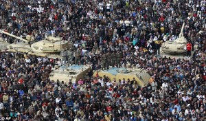

var olabilmek için işgal!
 İnsan bazen tek başınayken varlığının yaşadığı toplumda epey değersiz, arzuladığı ve istediği biçimdeki hayatın “diğerleri” için epey önemsiz olduğunu düşünür de sesini çıkartıp “ama ben böyle olsun istemiyorum ki…” demesi kolay olmaz. Ancak bu hissini “diğerleri”yle paylaştığında önemsendiğini ve “diğerleri”nin de kendisi gibi hissettiğini gördüğünde cesaret alır, özgür iradesinin kendisinde bulunan en basit yaşam hakkı olduğunu fark eder ve harekete geçip gereken neyse, ne pahasına olursa olsun, denemek ister. Hele bir de bu “diğerleri” değişimin gerekliliğini damarlarında hisseden 3-5 kişi değil de aynı toplumda yaşayan binlerce, aynı gezegende yaşayan yüz binlerce kişiyse, değişim zaten başlamıştır bile.
İnsan bazen tek başınayken varlığının yaşadığı toplumda epey değersiz, arzuladığı ve istediği biçimdeki hayatın “diğerleri” için epey önemsiz olduğunu düşünür de sesini çıkartıp “ama ben böyle olsun istemiyorum ki…” demesi kolay olmaz. Ancak bu hissini “diğerleri”yle paylaştığında önemsendiğini ve “diğerleri”nin de kendisi gibi hissettiğini gördüğünde cesaret alır, özgür iradesinin kendisinde bulunan en basit yaşam hakkı olduğunu fark eder ve harekete geçip gereken neyse, ne pahasına olursa olsun, denemek ister. Hele bir de bu “diğerleri” değişimin gerekliliğini damarlarında hisseden 3-5 kişi değil de aynı toplumda yaşayan binlerce, aynı gezegende yaşayan yüz binlerce kişiyse, değişim zaten başlamıştır bile.
2011 epey acayip bir yıldı, Prenses. Sana uzunca bir zamandır yazmıyorsam inan istemediğimden veya paylaşacak şey bulamadığımdan değil de bildiğin apıştım kaldım dünya gündemi içindeki kendi gündemimde. Sabahları radyoyu açmaya Lost’un bir sonraki bölümünü izleyecekmişim gibi gidiyorum, Prenses, hakkaten. Sanırım geçtiğimiz yılın uygarlık tarihinde uygarlıkla ilgili çok tuhaf ve bir o kadar da basit sorular çıkartan yegane yıl oldugu konusunda hemfikiriz. Ergenlikteki varoluş krizinin toplumsal türevi gibi bir yıl… Bitmek bilmeyen değişim gerekliliği sancılarının, doğurduğu bir yıl… Yalnızlaşan, sessizleşen, adapte olan bireylerin yalnız, sessiz ve adapte olmak istemediklerini duyurduğu bir yıl… Ağzımıza pelesenk olan “demokrasi”nin gerçekte hiç bir zaman var olmadığını her bir gezegen sakininin fark ettiği bir yıl… 10 yıl önce eylem kelimesi ağza alınamazken, yıl sonunda “eylemci”nin Time dergisine kapak olduğu bir yıl… Geri dönüşü olmayan değişim, öze dönüşüm ateşinin nihayet el yakmaya başladığı bir yıl…
Modern Demokrasi: “Liberal Kapitalizm”
Geçtiğimiz Mart ayında Brüksel’e gelen Noam Chomsky, bugünün modern demokrasisini yani liberal kapitalizmini norm olarak kabul eden bizlere önemli ve çok basit bir gerçeği hatırlattı: “İnsan haklarından bahsederken, son 50 yılda insanlığın nasıl büyük adımlar attığını unutmamak lazım. Bundan 50 yıl önce siyahiler, eşcinseller, şamanizm ve mistisizme ilgi duyanlar bırak kimliklerini kabul ettirmek, insandan bile sayılmazken bugün inanç, ırk, cinsel tercih yüzünden ayrımcılık yapan iş verenler yüksek mahkemelerde yargılanıyor, dünyanın bir çok ülkesinde binlerce kişinin katıldığı Gay Pride’lar (Eşcinsel Gurur Yürüyüşleri) düzenleniyor, şaman ve mistiklerle tanışmak için insanlar dünyanın öbür ucuna yolculuk ediyor. Peki neden mutlu değiliz?”
Bu basit soruya, başka bir soru yöneltelim: Chomsky dede, söyle bize gerçek anlamıyla demokrasi hiç var oldu mu gezegenimizde? Bence olmadı, o yüzden olmuş gibi davranmayı bırakalım öncelikle. Olmadı; ama uygarlık denilen şey içinde çıkan her soruna karşılık çözüm bulmaya çalışan bireyler sayesinde bir şeye evrildi. 68 kuşağı sayesinde insan hakları ,eşitlik, özgür irade, cinsel özgürlük kavramları ortaya çıktı. Sonra bu kavramlar manipüle edilip tarih içinde içi boşaltılmış ideolojilere oturtuldu (yani komünizm), sonra da bu ideolojiyi savunduğunu söyleyen SSCB ve Doğu Almanya’nın ortadan kalkmasıyla havada bırakıldı. Kavram dediğin havada kalır mı? Kalmaz. O zaman halihazırda mevcut olan tek yönetim sistemi ve ekonomik düzen olan liberal kapitalizme oturtuldu. İsmi de demokrasi kondu.
Peki bir topluma parayla mutluluk gelir mi? Valla belki de gelir ama bunun cevabını verebilmek için aynı anda aynı toplumdaki insanların aynı orandaki paraya sahip olması gerekiyor. Bu sahip olduğu paranın borç veya yardım olarak değil de bir şeyin değiş tokuşu olarak gelmesi gerekiyor. Bu değiş tokuş karşılığında alacağı paranın değerinin, değiş tokuşu gerçekleştiren tarafından belirlenmesi gerekiyor. Bu şartlar sağlanmadığı sürece, paranın toplumdaki yeri gibi zırvaları tartışmak entellektüel saçmalamadan öteye gitmeyecektir.
Evet, bugün gerçeği öğrendik sevgili Aldous Huxley ve gerçek bizi delirtiyor… Delirtmek derken, kafaya huni takıp kendi kendine konuşarak araba direksiyonuyla mahallede turlamaktan bahsetmiyorum ama ben. Esasında kaybedecek bir şeyi olmadığını fark eden basit insanların, kaybedecek epey çok şeyi olanlara iki kere düşünmeden özgür iradenin ne olduğunu göstermesinden bahsediyorum. Öyle bir delirdik ki esasında yalnızca değişim istiyoruz, basitçe değerlerden bahsediyoruz, gidenin arkasından neyin geleceğine kafa bile yormadan örgütlenme biçimimizle aslında neyin olmamasını istediğimizi gösteriyoruz.
İşgal: “Indignados” + “Occupy Wall Street”
2011 Ocak ayında Katalonya ve Bask Ülkesinde ekonomik kriz ve dengesiz gelir dağılımına karşı gerçekleştirilen genel grevle başlayan Indignados (indignants, les indignés veyaTürkçe’de bıkkınlar) hareketi, işgal yöntemiyle protesto biçimiyle Mayıs ayında İspanya’nın dört bir yanına ve aynı zamanda Yunanistan başta olmak üzere bir çok Avrupa ülkesine yayıldı. Avrupa’daki ekonomik kriz üzerinden işsizlik, zenginin zenginleşmesi, orta sınıf ve aşağısındaki katmanların olduğundan bir alt katmana inmesiyle, bütün bu düzenden BIK-TIK diyen Avrupa’nın her bir yerindeki milyonlarca kişi toplumsal alanların işgaliyle “bizim birbirimizden başka kimsemiz yok esasında; devlet baba, hükümet ana fasa fiso” gerçeğini gözümüze soktu. Bu işgaller yalnızca bir alana el konulması olarak gerçekleşmedi de işgalci grupların aralarında organize olmasıyla kendi kendine yeter toplulukların, merkeziyetçilikten uzakta nasıl yaşayıp iş çıkartabileceğini ele güne duyurması halinde gerçekleşti.
Arap Baharı’ndan ilham alan bıkkınlar, Occupy Wall Street (OWS) hareketine ilham vererek taze deneyimlerini paylaştı. Ve Eylül 2011’de Manhattan’daki Wall Street binasının bulunduğu Özgürlük Meydanı’nda binlerce Amerika’lı bıkkın toplanarak Avrupa ve daha az gelişmiş ülkelerdeki eylemcilere bir selam çakarken “Sorunun başladığı yeri işgal ediyoruz, yanınızdayız!” mesajını gönderdi. Hareket anında Amerika’nın 100’den fazla kentiyle birlikte dünyanın bir çok yerine yayıldı. Sloganları: “dünyada güce sahip olan %1’in karşısındaki %99’uzuz!” Sloganı bulan da Amerika’lı tanınmış anarşist antropolog, David Graeber.
İngilizce’n idare ederse Prenses, Occupy Wall Street’in web sayfasındaki forum kısmına arada sırada bakmanı öneririm. Herkesin girip, okuyup, yöntem, amaçlar, örgütlenme vesaire gibi konuları tartışabileceği forumda epey ilginç tartışmalar ortaya çıkıyor bazen.
Sabotaj: “Anonim”
2003’ten beri aktif, siber sabotaj hayatına devam eden Anonim hareketi, 2011’de dijital itaatsizlik yöntemiyle sokağa çıkanlara ya da korkup çıkamayanlara destek ve umut verdi. Wiki Leaks’in yanında durarak %1’i korkuttu. Korkutma sebebi bu hacker arkadaşların dünyanın dört bir yanında,
kimliklerinin belirsiz ve amaçlarının simultane siber ataklarla kaos yaratmak olması. Ulaştırma bakanlığı sansürleyeceğiz mi dedi, Anonim devreye girer, web sayfasını bloke eder ve altını basın açıklamasıyla doldurur. Mısır’daki halk ayaklanması başlar başlamaz Anonim devreye girer ve Mubarak indirilene kadar hükümet web sayfasını bloke eder. Wikileaks’ten sızan Tunus Devrimi belgesine sansür koyan Tunus hükümeti de Anonim sabotajıyla karşılaşmak durumundadır. Tunus’da halk ayaklanmaları devam ederken, Anonim’i temsil eden birisi Tunus hükümetinin çöktüğünü, hükümet web sayfasından anons eder. İspanya polisi, siber eylemci olduğundan şüphelendiği üç kişiyi tutuklayınca kendini siber eylem kurbanı bulur, internet siteleri Anonim tarafından bir gün kadar bloke edilir.
Tavrı, yöntemi, soğukkanlılığı ve kötü adamları ürkütücüğüyle sessiz sedasız yürüyen Anonim hareketine şapka çıkarıyorum huzurunda, Prenses.
Devrim: “Arap Baharı”
İşgal hareketlerine ilham veren Arap Baharı, OWS ve Indignados’dan farklı olarak ekonomik kriz yüzünden başlamadı da başlarındaki diktatörler ve çakma kabinelerinden kurtulmak için başladı. Tunus’daki limon satıcısı Mohamed Bouazizi’nin paramiliter bürokrasisinde yıllardır süründürülmesinden bıkıp kendini tinerle cayır cayır yakmasıyla ateş aldı Arap baharı. “Ben yanmasam, sen yanmasan, biz yanmasak nasıl çıkar karanıklar aydınlığa?” dediydi ya Nazım Hikmet, işte Araplar da dedi ki: “tek tek kardeşlerimizin yanmasıyla, karanlıkların ortaya çıkacağı yok. Biz en iyisi tek vücut, tek yürek olalım, yanarsak birlikte yanalım”.
Bir çoğu rantiye devleti yani üreterek değil de doğal kaynaklarını satarak zenginleşen ve zenginliğin çoğunu kendi sülalesine yediren diktatörler tarafından yönetilen Orta Doğu ve Kuzey Afrika ülkelerinde çıktı Arap Baharı. Dünya petrol üretiminin %90’ının bu bölgede gerçekleştiğini düşünürsek, diktatörlük yönetim biçiminin bir tesadüf olmadığını kavramamız zor olmaz Prenses. Bu diktatörlerin tesadüfen değil de belli başlı petrol müşterisi ülkeler tarafından başa getirildiğini de… Hemen “hadi len, komplo teoricisi” diye atlama, yıllardır öyle atladık meğer hepsi gerçekmiş. Bilim kurgu filmlerine palavra dedik, NATO’nun robot savaş uçakları gitti “yanlışlıkla” Pakistan’ı vurdu, Türkiye’ninkiler gitti sınırdaki Kürtleri vurdu. O yüzden aç gözlerini, kulaklarını!
Arap Baharı hepimize bir umut ve ilham verdiyse de kanlı diktatörlüklere kafa tutmak kolay iş değil, Prenses. Çok kişi öldü ve Suriye’de hala ölmekte…
Umut veren ise Arap halkının bundan sonra diktatörlüğe ve benzeri herhangi bir dayatmaya pabuç bırakmayacağı. Mesela iki hafta önce Mısır’daki eylemciler “Ne Mubarak, ne Müslüman kardeşler. Halkın gücü, halkta artık!” yazılı bir pankart açtılar. Ve mücadele devam ediyor…
Değişime giden yol
Bu hareketlerin hepsi şiddetsiz ve doğrudan demokrasi yöntemiyle internetteki sosyal ağları kullanarak organize oldular. Birbirlerinden destek ve ilham aldılar. Arap, Amerika’lı, Yunan, İspanyol ve her yerdeki, her basit insanın aynı küresel sistemin kölesi olmaya itildiğini gösterdiler. Ajitasyon yapmadan sivil itaatsizlikle başlamak gerektiğini gördüler.
Değişime ön ayak olan, kaybedecek hiç bir şeyi olmayan herkese teşekkürler!
Dipnot: Hatırlarsan Kojin Karatani abimiz “Ezilenin dönüşü ve X faktörü“nden bahsetmişti. Yalan söylemiyormuş…
İyi seneler!


{kind=link}
{kind=link}
{kind=link}
{kind=link}
Bence oldukça bütünlüklü bir yazı. ben yazdığın herşeye katılmasam da bunları tartısabiliriz zira bazı analizler oldukca tek boyutlu ve partizan. ben de hep bu dille konustugumdan biliyorum. arap baharının ekonomik kriz ile alakası olmayıp diktatörlere baskaldırı oldugu analizi biraz talihsiz kacmıs onu belirteyim tekrar bakın istersen. cunku yolsuzluk ve diktatoryel somuru bu ulkelerde yeni bir kavram olmasa da ekonomideki daralmanın genc calisanları vurdugu ve daha da yoksullastırdıgı asikar. bir de kuresel kapitalist krizin atlatılması icin yeni tuketicilere ihtiyac duyması durumu da buyuk ortadogu projesi kapsamında arap dunyasını alım gücü daha yuksek liberal demokrat tuketicilere cevirme cabası bence. biraz marksist bi eksen ama bana kalırsa oldukca gecerli bir arguman. son olarak da vendetta yazısında yazdıgım gibi indignados hareketini hala 3.dunyanın sırtından gecinen avrupa orta sınıfının cıglıgı olarak goruyorum ben. o yüzden hicbir devrimci vurgu yok orda. daha cok elindekini tutmaya
calisan “muhafazakar” bir tavır var. tabi her halukarda insanların sokaga cıkıp politize olması iyi bisey ama turkiye icin bile kisi basi milli gelirin avrupa ortalamasının onda biri oldugunu belirteyim ki afrikayı falan sen hayal et. o yüzden oldukca simarık orta sınıf hareketleri bunlar ve bence sonumlenmeye mahkum. anonim icin hacker grubu demek de bilmeyenler icin bisey ifade edebilir ama adamlar hack’lemekten cok basit online kitlesel blokaj eylemleri yapıyorlar. yazının aklıma getirdikleri bunlar. oyle calakalem yazdım. tartısacak oldukca fazla malzeme ortaya dokmussun.. ellerine saglık.
1) Arap baharının ekonomik krizle alakası olmaması: ekonomik kriz deyince ülkerdeki dengesiz gelir dağılımdan bahsetmiyoruz da batan bankaların devletler tarafından kefaletle kurtarılmasıyla birlikte gelen işsizlik, paranın değer kaybetmesi ve alım gücünün tepetaklak olmasından bahsediyoruz (bkz. yunanistan). Arap ülkelerinde ise böyle sorunlar olmadı çünkü güçlü diktatörler petrol zengini ülkelerdeki petrol kaynaklarını elinde tutan, Mısır ve CEzayir gibi ülkelerde soğuk savaştan beri kesilmeyen Amerikan yardım ve askeri destek paralarını cebe indiren, bankaların sahibi olan ve haliyle epey yolsuz yönetimler olduğundan ekonomik krizden değil de yolsuzlukla gelen dengesiz gelir ve refah dağılımından bahsedebiliriz. Yani evet, diktatörlere ve yönetim şekillerine bir başkaldırıdır Arap Baharı.
2) İndignados hareketi, dediğin gibi orta sınıf Avrupa hareketi gibi başladıysa da birden fazla ülkede toplumsal katmanların alt tabakalarını da kapsamaya başladı. Geçen yaz İspanya, Yunanistan ve bir çok ülkeden bıkkınlar Brüksel’e geldiler. Evet orta sınıf anarşistler de vardı aralarında ama mesela Belçika’da yaşayan pek çok göçmen grup da katıldı tartışmalara. Ben daha önce tanışmadığım bir çok Türk, Kürt mülteciyle tanıştım mesela. Kaldı ki sosyal ve politik hareketlerin orta sınıf, yani okuma ve farklı diller konuşma şansına sahip olmuş bireyler tarafından başlatılması çok da sürpriz değil bana göre. Elindekini tutmaya çalışsan muhafazakar tavırlı olanlar daha çok Avrupa’lı STK kafası, ben söyleyeyim. Bir arkadaşım daha yeni İrlanda’daydı… Edinburgh’un göbeğindeki meysanı işgal eden ve kendilerini Occupy Ireland olarak adlandırılan bıkkınlarla tanışmış. Esasında tanışmamak mümkün değil diyor. Tıkır tıkır işleyen bir kamp kurmuşlar ve halk sofrası ile birlikte tartışmaların düzenlendiği akşamlara özellikle evsizler ve belgesizlerin dahil edildiğini söylüyor. Ama evet, Brüksel’de başlamaya çalışan Bıkkınlar hareketi, 5-6 orta sınıf Avrupa’lı öğrenci bir meydanda tartışmaya çalışırken alkolik, evsizlerin dadandığı tuhaf bişiy olarak, sanki formalite icabı gibi çıktı ve söndü.
Bıkkınlar söndü ama Occupy’a ve Arap Baharı’na ilham ve deneyim bilgisi sağladı…
böyle.
Çok güzel ve derli toplu bir yazı. Ancak, Arap Baharı ile ilgili bir şüphemi sormadan edemeyeceğim: Diktatörler petrol kontrolörleri tacirler grubunun emrindeydilerse, bunlara karşı olan grupların başa getirecekleri kişilerin de aynı tacirlerce o gruplara şirin gösterilen kişiler olmayacakları / olmadıkları ne malum? Yani, bir 20-30 yıl sonra yeni bir bahar hareketi gerekmeyeceğinin garantisi var mı?
Sevgiler,
İşte tam da bu sebepten yıllarca petrol zengini ülkelerin yolsuz diktatör rejimlerini besleyen Amerika ve Avrupa, ne zaman bu ülkelerden birinde bir iç karışıklık çıksa NATO’yla birlikte bu ülkelere “demokrasi getirmek” bahanesiyle dalıp gündemi manipüle etmekten eksik kalmıyorlar. Bu durumdan, Libya-Belçika ekseninde şu yazıda behsetmiştim: https://www.prensesemektuplar.com/2011/04/bir-varmis-bir-yokmus.html
20-30 yıl sonra gelecek herhangi bir ilkbaharyazsonbaharkış hareketinden önce halihazırda devam eden hareketin nasıl yönetimlerle sonlanacağını ben daha çok merak ediyorum açıkçası. Yoksa 20 yıl sonra kim öleee kim kalaa…
Yazıyı beğenmene sevindim anne 🙂 hehe…
Michael Hardt Utrecht’te olucak haftaya (26-27). Istersen gel. Bende kalirsin, beraber katiliriz seminere. Ben bi de roportaj yapicam kendisiyle Uc Ekoloji icin eger vaktini ayarlayabilirse…
konular super, tam bu yaziya follow up baglaminda: 1. What to Do in a Crisis 2. The different politics of the commons
istersen utrecht universitesinin websitesinden bulabilirsin ayrintilari (uu.nl)
Sevgiler, ays
Yazı için çok teşekkürler. Her zamanki gibi zihnimde yeni pencereler açtı.
http://howtooccupy.org/ bu web sayfası engellenmiş olabilir mi? Engelli web’de göremedim ama ulaşamaıyorum.
Merhabalar. Ben Belçika’da olduğum için şu an için erişimimde herhangi bir engelleme yok, gerçi o da yakında engellenebilirmiş bu arada. Bakınız: http://avaaz.org/tr/save_the_internet_action_center_b/?slideshow
Ancak “how to occupy” sayfasına Occupy Wall Street’in sayfasındaki “#how to” sekmesine tıklayarak da ulaşabilirsiniz. Ya da ulşamassanız engellendiğini anlayabilirsiniz. Occupy Wall Street’in wab sayfası: http://occupywallst.org/
Kolaylıklar.
slm
arap baharıyla ilgili umutlu beklentiler içinde olmak çok aceleci bir yaklaşım olabilir
belkide arap sonbaharı demek daha doğru olabilir
yaratılan kargaşa düzensizlik ve sivil itaatsizlik on periyotta aslında protesto edilen hakim güçlerin işine yarıyor
ve tekrar baaş dönüyoruz zira eski sistemide yeni sistemi kuranlar kuracak ve ya o fırsata sahip olacaklar
peki çözüm ne ????????????
Arap baharıyla ilgili umuda kapılmak evet biraz fazla polyannacılık olabilir zira sonuçlarından hiç emin değiliz ve de dediğin gibi kargaşa/düzensizlik, dünyadaki politik güçlerin işine gelip bahane çıkartabiliyor (bkz. yıllardır zorla bir millet kurdurmak için NATO’nun daldığı Afganistan’dan çıkıldığında ortaya çıkacak trajedik hal ve Avrupa hükümetleri tarafından beslenen kanlı bir diktatörden kurtulduğu halde yine güya “demokrasi” müdahalesiyle dağılmış, parçalanmış Libya). Fakat beni umutlandıran şey tüm bu ayaklanmaların sonucunda ne olacağı değil çünkü güçlü partiler değişen denge ve durumlardan maksimum yararlanmanın bir yolunu hep bulacak. Beni umutlandıran şey bu süreç…. ve dünyanın başka yerlerindeki grupların aynı sebep, farklı motivasyonlarla birleşip sivil itaatsizlik yolunu seçiyor olması. Bunun olumlu veya olumsuz esas sonuçlarını görmek için benim ömrüm vefa eder mi bilmiyorum ama strateji olarak şiddetsizliği ve gönüllü olarak bir araya gelerek kendi aralarında katılımcı demokrasiyi uygulamaya çalışan ve sivil itaatsizliğe giden “sıradan” insanların dünya dinamiğinde bir şeyler değiştirmekte olduğundan epey eminim. İçi boşaltılmış değerlerin tüketimle doldurulduğu bir toplumda yalnızca mevcut sistemi bozmak için değil yeni bir düzden kurulması için atılan her samimi ve gereksinimlerden doğan adımın toplumsal hafızada değiştireceği pek çok şey var.
Sistem dediğimiz şeye genel anlamıyla baktığımızda (yönetim sistemi olmak zorunda değil, hücre veya metabolizmanın sistemi de olabilir bu), bir şeylerin değişmesi ve gelişmesi için tepkimeye giren hep iki taraf var: sistemin hastalıklı kısmını yıkmak (katabolizm), bu hastalıklı kısım sayesinde kuvvetlenen bağışıklık sistemiyle yeni ve daha iyisini kurmak (anabolizm) ve bir de katalizörler vardır ki kendileri tepkimeye girmezken içine girdikleri sistemdeki tepkimenin hızını arttırarak kendileri değişmeden iş bittikten sonra ortamdan çıkarlar. Bahsettiğimiz her türlü “sistem”in esasında bunun olduğunu kendime hatırlatmaya çalışıyorum. Mesela Cezayir’de kendini yakan limon satıcısı katabolizme katkı sağlarken -yıkım-, Yunanistan’da Syntagma meydanında toplanıp birbirine destek olarak kendi kamp biçimini kuranlar anabolizme katkı sağlamış oluyor -yapım. Sokağa çıkan binlerce insanı ben daha çok katalizörler olarak görüyorum; tabi ki sokağa çıkanlar paramiliterler tarafından öldürülme tehdidi altında değillerse, yok eğer öyleyse zaten katalizöre yer açmak için önce yıkım yoluna gitmek gerekecektir….
Neyse uzatmayayım… diyeceğim o ki eğer içinde bulunduğu sistemdeki hastalıkların farkında olan herkes kendine uygun rolü bulup bu metabolizma içine girerse, sonuçlarından hiç bir şekilde emin olamasak bile bu yıkım-yapım tepkimesi sürecinin bir şeyleri evireceği çok net bence. Yoksa en doğru çözümü görmek dışarıdan bakan insanlara düşmez zaten bana göre; ancak sürecin içinde olanların gereksinimlerine göre ortaya çıkacak bir şey bu. Ve de zaten her ülkeye/topluluğa uygulanacak maymuncuk gibi bir çözüm zaten olamaz… bu merkeziyetçi çözüm bulma mantığından biraz sıyrılabilirsek belki de her şey daha netleşecek. tabi önce denemek lazım.